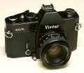

1973 年面世。同 Cosina Hi-Lite。Copal 全机械纵走金属幕帘快门 B，1/1000s。1/125s 闪光同步。微棱对焦屏。独有的 Cosina 式 stopdown 测光机制（和下面的 XC 系列一样）集成在快门钮上是 Cosina 的设计新卖点。但由于这个设计具有不可逆性，所以市场反映并不是太好。机身是硕大型，和 Mamiya，Yashica，Chinon 同期机身大小差不多。浑身上下都是铜和铁，绝对的金属情节热爱的那种。使用 PX675 1.35v 水银电池供测光用。